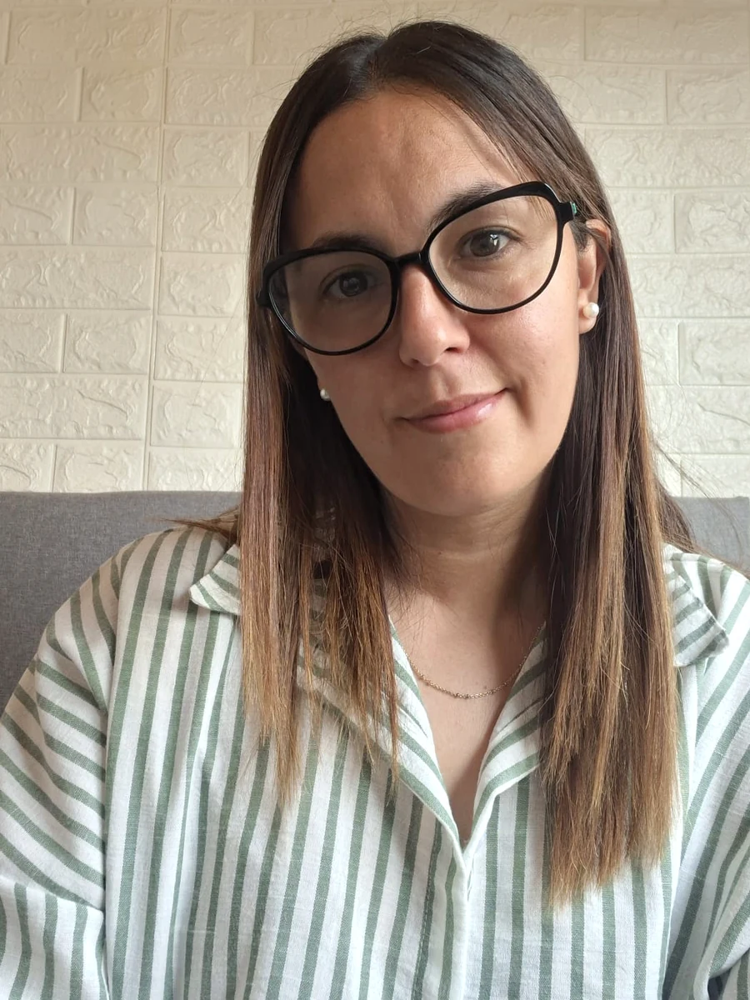

Momentos de crisis y cambio
Acompañamiento para transitar situaciones difíciles, cambios personales y etapas de incertidumbre.
Counseling online · Tres Arroyos
Te acompaño en momentos de crisis y en procesos de desarrollo personal desde una escucha activa, aceptante y libre de juicios.

Un proceso centrado en vos
Un espacio profesional para explorar lo que estás viviendo, reconocer tus recursos y avanzar con mayor claridad.
Acompañamiento para transitar situaciones difíciles, cambios personales y etapas de incertidumbre.
Un espacio para comprender lo que sentís, reconocer tus necesidades y conectar con tus propios recursos.
Acompañamiento para fortalecer capacidades, revisar aquello que necesitás transformar y favorecer tu crecimiento.
Un espacio de reflexión para explorar alternativas y tomar decisiones con mayor conciencia y claridad.
Una profesión de ayuda
El Counseling o Consultoría Psicológica es una profesión de ayuda que está orientada a promover el bienestar, el desarrollo personal y la prevención en salud mental. Su propósito es acompañar a las personas en sus procesos de cambio, crisis, conflictos o toma de decisiones, reconociendo y valorando la singularidad de cada una.
A través de un vínculo basado en la escucha activa, la empatía, la aceptación positiva y la autenticidad, ofrece un espacio seguro donde la persona puede explorar sus experiencias, reconocer sus propios recursos y encontrar nuevas maneras de afrontar las distintas situaciones de la vida.
El Counseling no brinda respuestas prefabricadas ni aconseja qué hacer. Confía en la capacidad de cada persona para comprenderse, crecer y encontrar sus propias respuestas cuando cuenta con un vínculo de acompañamiento que favorece ese proceso.
Se sustenta en fundamentos científicos y se nutre principalmente de la Psicología Humanista, la filosofía existencial y otros aportes de las ciencias humanas, integrando conocimientos que favorecen el autoconocimiento, la autoexploración y el desarrollo de las potencialidades.
Sobre mí
Como Counselor, acompaño a las personas en sus procesos de cambio, crisis y desarrollo personal.
Mi manera de acompañar se basa en una escucha activa, aceptante y libre de juicios, respetando la experiencia, los tiempos y la singularidad de cada persona.
Trabajo desde el Enfoque Centrado en la Persona (ECP), confiando en que cada ser humano cuenta con recursos y potencialidades que pueden desplegarse en un vínculo basado en la empatía, la aceptación y la autenticidad.
Cómo son los encuentros
Escribime por WhatsApp para realizar una primera consulta, conocer la modalidad de trabajo y coordinar nuestro primer encuentro.
Nos encontraremos por videollamada durante aproximadamente 45 minutos, en un espacio confidencial, tranquilo y pensado para que puedas expresarte con libertad.
Conversamos sobre tu motivo de consulta y evaluamos si este espacio responde a tus necesidades.
Preguntas frecuentes
Estas respuestas pueden ayudarte a conocer mejor la modalidad de trabajo.
No. No es necesario estar atravesando una crisis para iniciar un proceso de Counseling. También podés acercarte si deseas conocerte mejor, desarrollar tus recursos personales, fortalecer tu autoestima, mejorar tus vínculos, tomar una decisión importante o simplemente habitar un espacio para reflexionar sobre distintos aspectos de tu vida.
Podes trabajar todo aquello que hoy esté generando malestar, dudas o simplemente el deseo de producir un cambio en tu vida. Algunos ejemplos son: cambios personales o laborales, conflictos en los vínculos, crisis vitales, procesos de duelo, autoestima, toma de decisiones, manejo de emociones, desarrollo personal o situaciones que necesiten un espacio de escucha y reflexión. Cada proceso es único y se adapta a las necesidades de quien consulta.
El primer encuentro es gratuito. Es un espacio para conocernos. Podrás contarme qué te está pasando, qué te motivó a consultar y qué esperás de este proceso. También será una oportunidad para que puedas conocer mi forma de trabajar y resolver todas las dudas que tengas. No necesitás preparar nada ni saber exactamente qué decir.
Cada encuentro dura aproximadamente 45 minutos.
Sí. Actualmente los encuentros se realizan únicamente de manera online mediante videollamada. Esta modalidad permite que puedas acceder al acompañamiento desde cualquier lugar, conservando la misma calidad del vínculo y la confidencialidad del espacio.
Solo necesitás un dispositivo con conexión a internet, un lugar tranquilo donde puedas hablar con privacidad y un momento en el que puedas dedicarte a vos.
Si sentís que hay algo en tu vida que te gustaría comprender mejor, atravesar de otra manera o simplemente necesitás un espacio donde sentirte escuchado, el Counseling puede ser para vos. No hace falta tener todas las respuestas ni saber exactamente qué necesitás. A veces, dar el primer paso es simplemente animarte a conversar.
Primer paso
Escribime para recibir información y coordinar una primera entrevista online.